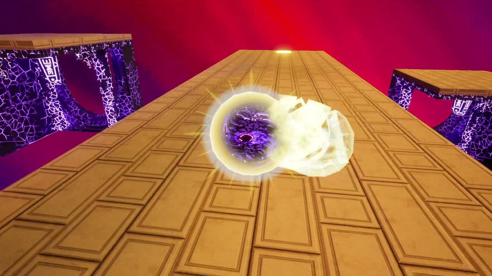

Duality of Light and Dark (working title)
A game where the player flips between a light and a dark dimension.
What I built
- Shadow Stalker AI with dual-surface navigation, custom behavior-tree tasks, and spline patrols that keep working upside-down through dimension flips. Also the Echo and Prismatic Sentry enemies.
- Dimension flip and portal system: camera and portal transitions, per-orb camera memory, a GameDirector editor tool, timeline effects, and a fresnel portal material.
- Luminary boss class and State Tree with wave and phase modifiers, pylon-triggered phases, and dev skip hotkeys.
- Magnetic platforms, seesaws, trapdoors, platform velocity inheritance, and ball-rolling orb physics.
- Traced a hitch on every flip to 1,674 tagged actors and fixed it at the prop blueprint. Merged wall meshes for performance.
- Docs: game loop and director architecture, a StateTree primer, and a boss integration guide.